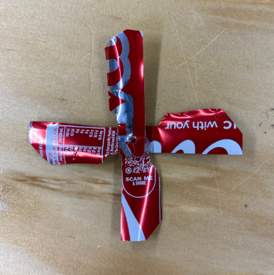
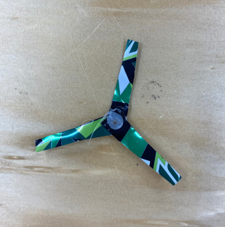

The efficiency of a propeller design is based on how much of the engine's power is turned into thrust. While having more blades increases thrust, each blade also increases drag which reduces efficiency.
One way to increase thrust is to extend the length of each blade to make more thrust but keep efficiency high. However, increasing the length of a propeller blade isn’t always possible, because longer blades reduce ground clearance. Increasing the blade length too much can lead to blades hitting the ground or other parts of the vehicle.
An optimal propeller design should balance the thrust to drag ratio while maximising the size and efficiency within the available space.
The information gathered from this research was instrumental in the design choices of the propellers. The designs sought to find, then further optimize the optimal pitch and blade specifications in order to meet a perfect equilibrium between acceleration and higher rpm performance.
| Number of Blades |
Image |
Description |
| 4 (Propeller 1) |
 |
This design features:
- A thick internal blade width
- A constant angle throughout the blades
- A rounded end piece.
Came first mostly due to its optimal mix of blades, size and angle. This mix allowed the propeller to outperform
all other blades by a large margin.
|
| 4 (Propeller 2) |
 |
This design features:
- A tapering blade design
- Accentuated rounding towards the ends of the blades
- Extreme angle on the outside of the blade.
Tied last with Propeller 3 party due to its tendency to blow air upwards and not in the direction required. This could most likely be attributed to the extreme angle of the blades.
|
| 3 (Propeller 3) |
 |
This design features:
- Small blades
- Small amount of angle on the blades
- Straight equidistant blades
Tied last with Propeller 2 and was unable to drive the car. Most likely due to the lesser amount of blades and the shape being too small to catch air at low RPMs.
|
| 3 (Propeller 4) |
 |
This design features:
- Thick pointed blades with strong angles
- Thick design
Performed second best out of all blades, most likely due to its thick blades able to grab and pull air at low rotation speeds.
|
| Name |
Use |
Original Use |
Image |
| High Desnity Styrofoam (from packages) |
Used due to its low weight and its ability to remain extremely stable. |
Used as model making foam, offcuts used. |
|
| Plastic Bottle (Lipton Ice Tea) |
Used as chassis/main body panel for the 2nd car, securely holding everything in place. |
Bottle cap for Lipton Ice Tea |
|
| Rubber Band (from Vegetable or Sushi packaging) |
Used as a grip for the wheels. |
Bottle cap for Lipton Ice Tea |
|
| Bottle Caps (milk carton or bottle) |
Used as the wheels due to its round and uniform shape. Also has inbuilt grooves leading to better grip. |
Bottle cap for Lipton Ice Tea |
|
| Sheet from Aluminium Can |
Used as the propeller due to its lightness and ability to hold its shape. |
Aluminium Drink Can |
|
| Wooden Dowel/Skewers |
Used to allow the wheels to spin and strong when under all forms of force other than torque. |
N/A |
|
| Motor |
Used to power the propeller. |
N/A |
|
| Battery Pack |
Used to hold the batteries. |
N/A |
|
| Switch |
Used to toggle the circuit between the powered and unpowered
state. |
N/A |
|
| Wires |
Used to send current and power between the components motor.
|
N/A |
|
| AA Batteries |
Used to power the components. |
N/A |
|
| Name |
Use |
Image |
Price |
| High Desnity Styrofoam (from packages) |
Chassis and base material for the car. Used for its lightweight
and ease of conforming to specifications. |
|
Free
|
| Plastic Bottle (Lipton Ice Tea) |
New Chassis for the car. |
|
Free
|
| Rubber Band (from Vegetable or Sushi packaging) |
Used to create better grip from the wheels and the path. Will
also be used to hold parts together when they require to be taken off regularly. |
|
Free
|
| Bottle Caps (milk carton or bottle) |
Used as the wheelbase for their size and texture. |
|
Free
|
| Sheet from Aluminium Can |
Used as the propeller due to its lightness and ability to hold
its shape. |
|
Free
|
| Wooden Dowel/Skewers |
Used to allow the wheels to spin. |
|
Supplied: Approx $0.50
|
| Motor |
Used to power the propeller. |
|
Supplied: Approx $3.50
|
| Battery Pack |
Used to hold the batteries. |
|
Supplied: Approx $2.00
|
| Switch |
Used to toggle the circuit between the powered and unpowered
state. |
|
Supplied: Approx $10.00
|
| Wires |
Used to send current and power between the components motor.
|
|
Supplied: Approx $1.50
|
| AA Batteries |
Used to power the components. |
|
Supplied: Approx $5.00
|
| Images |
Instructions |
| Click here to go back to Materials |
Step 1: Collect the required materials.
- At least 1 aluminium can for the propeller
- A plastic bottle for the chassis
Provided materials include:
- 4x Plastic Bottle Cap Lids
- 1x 3v Electric Motor
- 2x Wood Dowels/Skewers
- 1x Switch
- Wires
|
| Step 3: |
Step 2: To begin, first use a soldering iron (intended for use on plastic) to melt the back of the bottle off
Step 3: Using the soldering iron, make a cutout on the side of the bottle where the switch will be
mounted
Alternatively a saw or other device could be used to make these cuts
|
|
Step 4: Melt two holes into each side of the bottle (ensuring the line up with their pair on the opposite side)
Alternatively a drill or other device could be used to make these cuts
Step 5: Insert the wooden down/skewers into each hole
Step 6: Gather 4 Bottle lids and use hot glue to attach one to the end of each side of the two dowels
|
|
Step 7: Use wire strippers to remove the insulation (if applicable)
Step 8: Using a soldering iron (intended for soldering wires) solder the wires from the battery pack to the
switch
Step 9: Collect two more wires (repeat step 4 for each side), then solder from the switch to the motor
|
|
Step 10: Mount each component into or onto the bottle. Mount the switch in its hole (made in step 3), the
battery pack to the inside of the bottle, and the motor on the outside on the top (opposite side to that of the
wheels)
Step 11: Use hot glue, tape, or another adhesive to attach the components
|
|
Step 12: Insert 2 AA Batteries correctly into the battery pack
|
|
Step 13: Cut a metal can into one large sheet.
Step 14: Cut these sheets into 3x5 strips. x4
Step 15: Bend the sheets sideways
|
|
Step 16: Hot glue all 4 blades equidistant from each other.
Step 17: Hammer a hole into the center of the propeller.
Step 18: Attach the propeller
Step 19: The Propeller Dragster is Complete
|